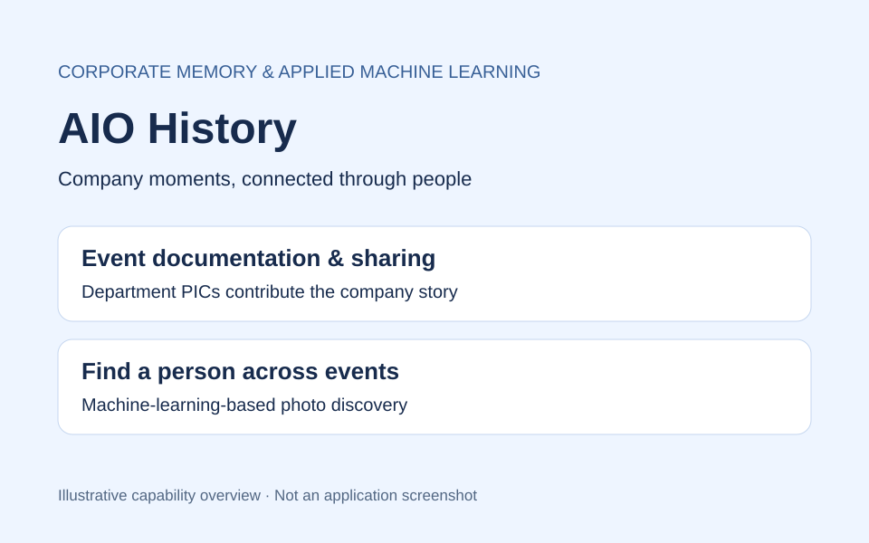

A living archive of the company’s shared moments
AIO History brings company event documentation into a shared archive. The material spans CSR activities, family days, games and employee events, factory visits, outings, management meetings, and other occasions in the life of PT Amerta Indah Otsuka.
Each department has a person in charge (PIC) responsible for uploading its documentation. File-sharing capabilities make the archive useful beyond the uploading team, while machine-learning-based person recognition provides another way to discover photos across the company’s event history.
A file can be stored and still be difficult to find
Event documentation has value long after the event finishes. But the person looking for a photo may remember who attended rather than the event name or the department that uploaded it.
AIO History addresses both sides of that problem: departmental responsibility helps documentation reach a common archive, and person-based photo search lets people find relevant images across events.
Key features
- Company event documentation
A shared destination for documentation from company activities, retaining the event as the context for the uploaded material.
- Department PIC ownership
Each department has a responsible PIC who contributes its documentation, giving the archive a clear participation model.
- File sharing
Sharing capabilities support collaboration and reuse, with an experience comparable in purpose to a shared document library.
- Machine-learning-based person recognition
The photo-search capability identifies people in the archive so a person can be the starting point for finding relevant images.
- Cross-event photo discovery
A person search can surface photos from different company events, helping users find material without already knowing the occasion.
From departmental documentation to corporate memory
The archive combines a shared destination with departmental responsibility for contributing the documentation. Event records remain the context around the files.
The upload responsibility keeps the archive connected to the people organizing the activity. The archive and sharing experience then make that material available as a reusable company resource.
My contribution at PT Amerta Indah Otsuka
I worked on AIO History as an enterprise application connecting event documentation, departmental upload responsibility, and sharing. The project also included early machine-learning-based person recognition for photo search across the event archive.
The product brings conventional document-management needs together with a different retrieval question: “show me the photos involving this person,” rather than requiring the user to locate every relevant event first.
Document management meets person-based discovery
The functional design has two complementary parts. The archive manages event documentation and sharing; the machine-learning capability supports recognizing people in photos and retrieving relevant images across events.
The value is person-based discovery across events, similar in purpose to the people-search experience in modern phone galleries. The diagram does not prescribe a model, training method, or recognition accuracy.
This was an early applied-AI project in my work, focused on image recognition and retrieval. Its purpose was practical discovery within the company archive, separate from the conversational workflows I later built with LLMs.
Make the company’s history easier to rediscover
AIO History treats company documentation as shared organizational memory. Departmental participation supplies the material, sharing supports reuse, and person-based discovery adds a route through photos that event folders alone cannot provide.
The main product lesson is that search should reflect how people remember. Sometimes the useful starting point is a person, not a filename or an event title.